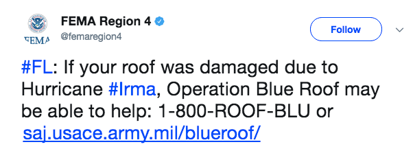
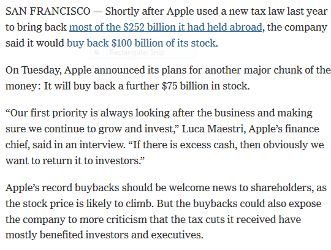

10.1 Information Extraction
Pull structured fields out of free text.
1. What information extraction is
Classification gives a label for a whole document. Information extraction (IE) pulls fields out of the text: who, what, when, how much, and how those pieces relate.
The input is still messy language. The output is closer to a row in a table. A news desk, a bank app, or a chatbot can act on that row.
This week follows Practical Natural Language Processing (Vajjala, Majumder, Gupta, Surana) and Natural Language Processing in Action (Lane, Howard, Hapke).
2. Where you see it
IE is not one product. It is a family of jobs that show up inside other products.
| Application | What you extract |
|---|---|
| News tagging | People, companies, places, events so a story can be filed and linked |
| Chatbots | The object of the request ("order a pizza") so the bot can ask the next question |
| Social media | Time-sensitive facts: traffic, weather, disaster updates |
| Forms and receipts | Amounts, dates, account numbers from a scan |
A banking app that lets you photograph a check is doing IE: find the amount and the routing facts, then post the deposit.

Chatbots need the same skill. "I want to order online" is not a class label. The system has to see the intent (order) and then ask what to order.
3. One paragraph, many IE jobs
A human reader of an Apple earnings story sees at once: the company is Apple Inc., Luca Maestri is the finance chief, and the event is a stock buyback.

A machine has to climb a ladder of tasks:
| Task | What it answers on that story |
|---|---|
| Keyphrase extraction (KPE) | The piece is about buyback and stock price |
| Named entity recognition (NER) | Apple is an organization; Luca Maestri is a person |
| Named entity disambiguation / linking | This Apple is Apple, Inc., not a fruit company or another firm with the same name |
| Relation extraction | Maestri is finance chief of Apple |
| Event extraction | The article is about one event: a buyback |
| Temporal IE | Dates and times for a calendar or a timeline |
You will not build every layer this week. You need the map. Note 10.2 is the pipeline. Note 10.3 is KPE. Week 11 is NER and the tasks that sit on top of it.
4. Why this is harder than classification
A spam filter can be wrong on one email and still be useful. An extractor that mis-labels Apple as a fruit, or that misses the dollar amounts, writes a bad row. Downstream search, a knowledge graph, or a bot will repeat that error.
IE also depends on earlier NLP steps. If sentence splitting or part-of-speech tagging is wrong, NER and relations usually follow it downhill. That is why the next note spends time on the pipeline, not only on the end task.
Start with the row you need. If the product only needs tags for a filter, stop at KPE or NER. If it needs a knowledge graph, budget for linking and relations. Do not train the whole ladder because a survey paper listed every rung.
5. What this week is for
By the end of Week 10 you should be able to:
- name the main IE applications and the tasks in the table above
- say which task is KPE, which is NER, and which is a relation
- explain why a chatbot and a receipt scanner are both IE systems
A useful habit on every new corpus: write one paragraph, underline the spans you would want in a table, then label each underline with a task name. If you cannot name the task, you are not ready to pick a model.
6. Practice
-
Take one product you use (mail, maps, a bank app). Name two IE tasks from the table that it is doing.
-
In the Apple snippet, which span is an entity and which fact is a relation?
-
Why is "the article is about a buyback" not the same job as "Luca Maestri is Apple's finance chief"?
Keep the Apple paragraph. You will reuse it in notes 10.2, 11.1, and 11.2.